Albums
Chronologiczny przegląd oficjalnych projektów Ye
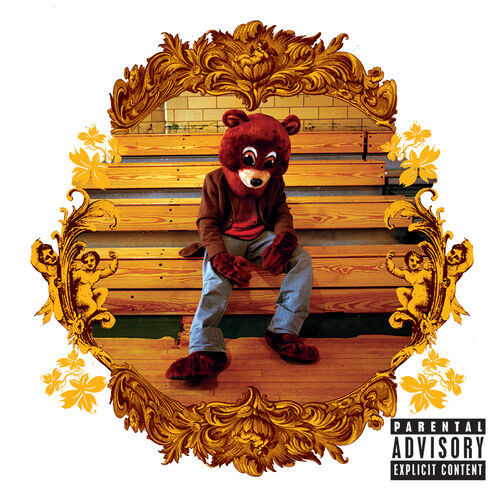
The College Dropout
Debiutancki album Ye, który połączył soulowe sample, osobiste teksty i świeże podejście do hip-hopu. To projekt o ambicji, presji i budowaniu własnej drogi poza utartymi schematami.
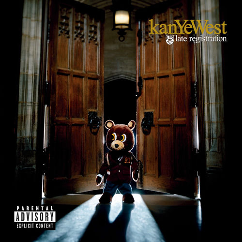
Late Registration
Rozwinięcie pomysłów z debiutu w bardziej dopracowanej i rozbudowanej formie. Album wyróżnia się bogatszym brzmieniem, orkiestracjami i refleksją nad sukcesem, oczekiwaniami oraz pozycją artysty.
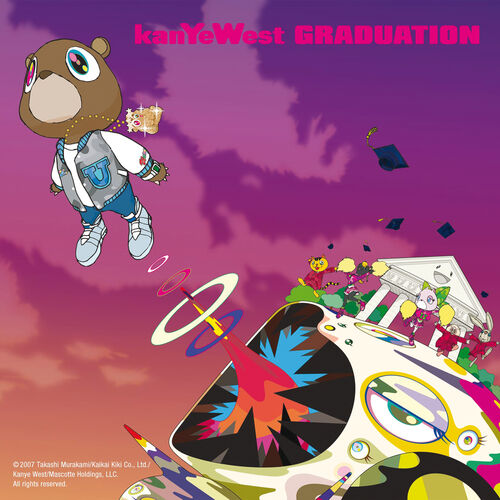
Graduation
Album, na którym Ye przeszedł w stronę bardziej elektronicznego i stadionowego brzmienia. To projekt o pewności siebie, sławie i wejściu na nowy poziom kariery.
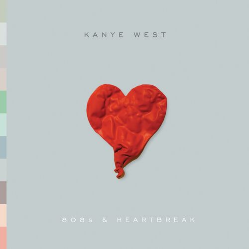
808s & Heartbreak
Jeden z najbardziej emocjonalnych projektów w jego dyskografii. Surowe teksty o stracie i samotności połączone z autotunem i minimalistyczną produkcją stworzyły album o ogromnym wpływie na późniejsze brzmienie rapu i popu.
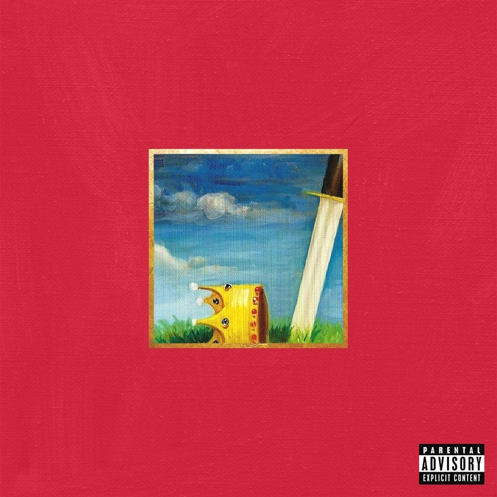
My Beautiful Dark Twisted Fantasy
Monumentalny i rozbudowany album, często uznawany za jedną z najważniejszych pozycji w jego karierze. Łączy maksymalistyczną produkcję, temat sławy, ego i winy w bardzo teatralnej formie.
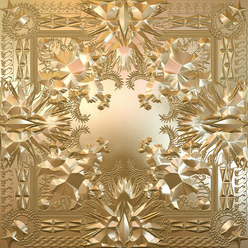
Watch The Throne
Wspólny projekt Ye i Jay-Z, zbudowany wokół luksusu, pozycji i hip-hopowej dominacji. Brzmi monumentalnie i pewnie, pokazując dwóch artystów działających na szczycie swoich możliwości.
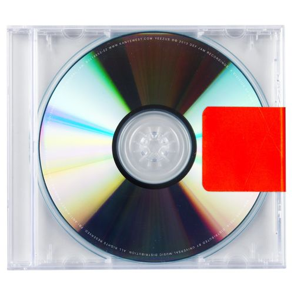
Yeezus
Jeden z najbardziej agresywnych i eksperymentalnych albumów Ye. Surowe, industrialne brzmienie oraz prowokacyjny ton tworzą projekt, który świadomie odrzuca wygodę i stawia na napięcie oraz minimalizm.
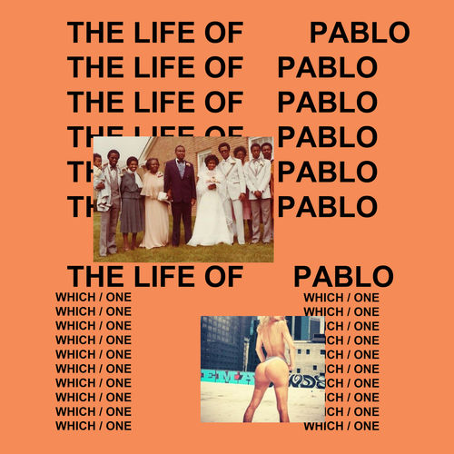
The Life Of Pablo
Chaotyczny, żywy i bardzo różnorodny album, który łączy gospel, rap, elektronikę i osobiste wyznania. To projekt pełen kontrastów, pokazujący Ye jako artystę nieprzewidywalnego i stale zmieniającego swoją wizję.
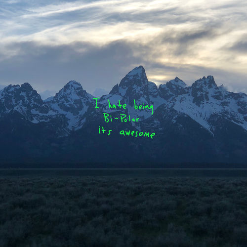
Ye
Krótki i bardzo intymny album skupiony na emocjach, rodzinie i niestabilności psychicznej. Brzmi bardziej osobiście niż wiele wcześniejszych projektów i pokazuje bezpośrednią stronę artysty.
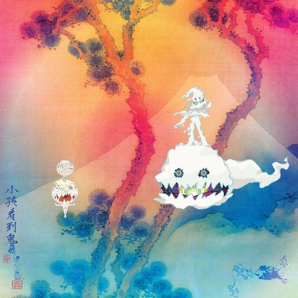
Kids See Ghosts
Wspólny album Ye i Kid Cudiego, łączący psychodeliczne brzmienia z tematami zdrowia psychicznego, traumy i odkupienia. To jeden z najbardziej spójnych i klimatycznych projektów z tego okresu.
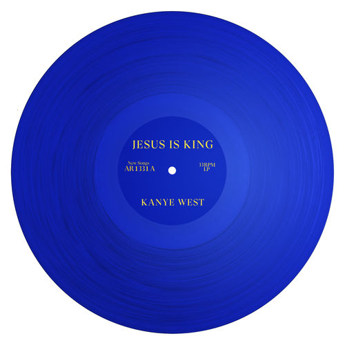
Jesus Is King
Album skupiony na wierze, duchowości i religijnej przemianie Ye. Brzmieniowo opiera się na gospelowych wpływach i prostszej strukturze, stawiając atmosferę i przekaz ponad rozbudowaną formę.
Donda
Rozległy i osobisty projekt poświęcony matce artysty. Album łączy duchowość, żałobę, rodzinę i monumentalny rozmach, tworząc jedną z największych i najbardziej emocjonalnych pozycji w jego katalogu.
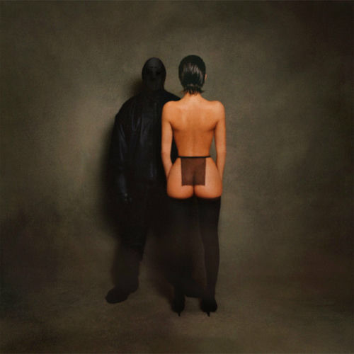
Vultures 1
Pierwsza część projektu ¥$, stworzonego wspólnie z Ty Dolla $ignem. Album miesza współczesny rap, trap i melodyjne fragmenty, pokazując bardziej luźne i zbiorowe oblicze twórczości Ye.
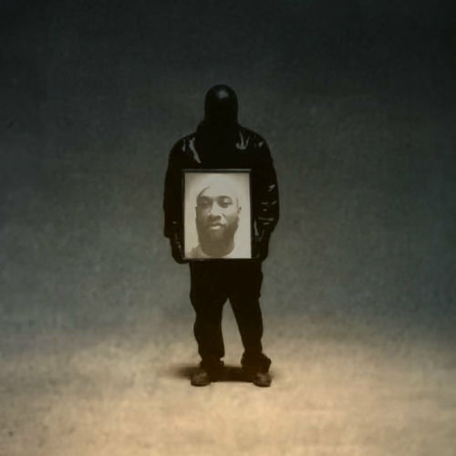
Vultures 2
Kontynuacja współpracy pod szyldem ¥$, rozwijająca pomysły z pierwszej części. Projekt jest bardziej eksperymentalny i pokazuje współczesny etap twórczości Ye oraz jego podejście do publikowania muzyki.
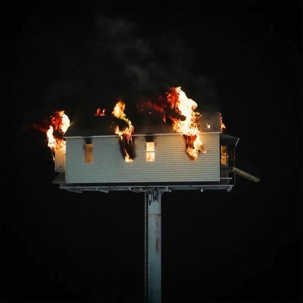
Donda 2
Projekt powiązany tematycznie z poprzednią erą, ale bardziej szkicowy i eksperymentalny w odbiorze. Na osi czasu dobrze działa jako przejście między monumentalnym okresem „Donda” a nowszymi wydawnictwami.
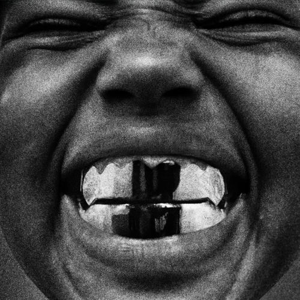
Bully
Projekt zapowiadający kolejny etap twórczości Ye. Już sam tytuł sugeruje bardziej bezpośredni, surowy i konfrontacyjny charakter, a sam album budzi duże zainteresowanie jako potencjalne otwarcie nowego rozdziału w jego dyskografii.